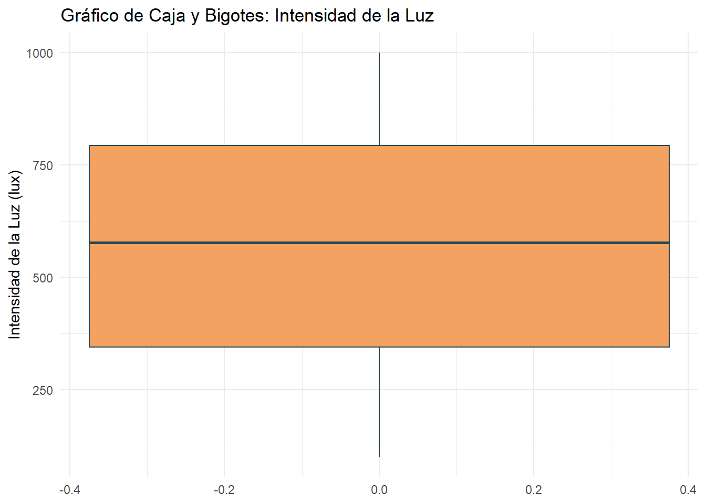
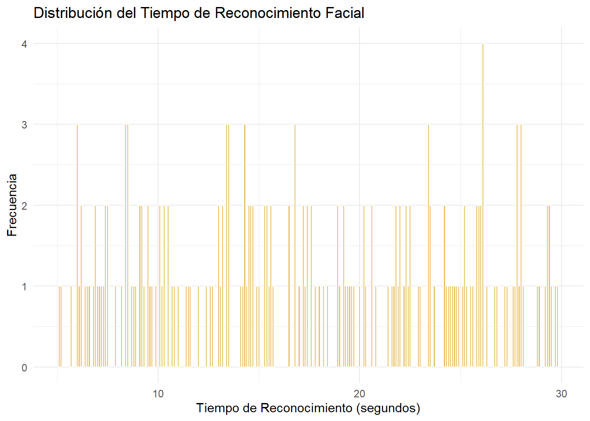
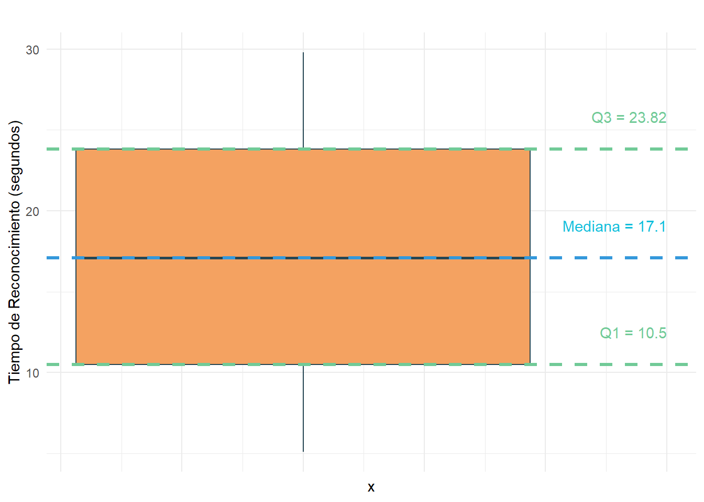
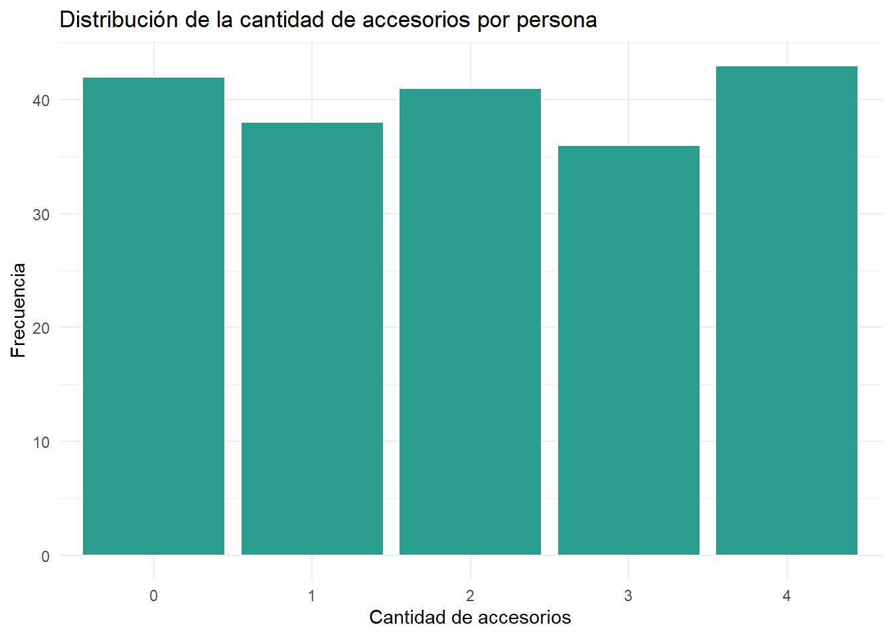

El presente estudio tiene como objetivo general determinar los factores que influyen en el reconocimiento facial a través del sistema de control de ingreso y salida de la Universidad de Ingeniería y Tecnología (UTEC) durante el ciclo 2024-2. Este análisis es de gran importancia, ya que un sistema de control eficiente es fundamental para el acceso ágil y seguro de los estudiantes al campus universitario.
Se evaluarán variables relacionadas con la intensidad de la luz, las características del individuo (como altura, género, color de piel, uso de accesorios en el rostro, entre otros) y las condiciones del entorno (como la aglomeración de personas o las condiciones climáticas). Estas variables pueden afectar la precisión y el tiempo de respuesta del sistema de reconocimiento facial.
Objetivo General
Determinar los factores que influyen en el reconocimiento facial a través del sistema de control de ingreso y salida de la UTEC en el ciclo 2024-2.
Objetivos específicos
Analizar la relación entre la intensidad de la luz y el tiempo que le toma al sistema de reconocimiento facial permitir el ingreso a los estudiantes.
Analizar el impacto del uso de accesorios en la cabeza y rostro (capucha, gorra, lentes, mascarilla) en el tiempo de reconocimiento facial del sistema de control de ingreso y salida de los estudiantes de UTEC en el ciclo 2024-2.
Código para cargar los datos y librerías necesarias, además de constantes usadas en el análisis.
Code
## Intenta instalar todas las dependencias usadas en el quarto documentcheck_and_install <-function(package) {if (!require(package, character.only =TRUE)) {install.packages(package, dependencies =TRUE) }}check_and_install("tidyverse")check_and_install("ggplot2")check_and_install("dplyr")check_and_install("formattable")check_and_install("skimr")library(tidyverse)library(ggplot2)library(dplyr)library(formattable)library(skimr)customGreen0 ="#DeF7E9"customGreen ="#71CA97"customBlue ="#3498db"customBlue0 ="#11bedb"customRed ="#ff7f7f"df <-read_csv("datos_reconocimiento.csv", locale =locale(encoding ="ISO-8859-1"))
Variables estudiadas
Las variables utilizadas para este análisis incluyen:
Código: visualización de características generales de las variables
Code
variables_df <-data.frame(Variable =c("Altura", "Lleva Accesorios", "Género", "Tamaño del Cabello", "Color de Piel", "Horario", "Intensidad de Luz", "Distancia", "Aglomeración", "Tiempo de Reconocimiento", "Color de Prenda Superior", "Clima", "Fallo en el Acceso"),Tipo =c("Numérica continua", "Categórica nominal", "Categórica nominal", "Categórica ordinal", "Categórica nominal", "Categórica nominal", "Numérica discreta", "Numérica continua", "Categórica ordinal", "Numérica discreta", "Categórica nominal", "Categórica nominal", "Booleana"),"Valores Aceptados"=c("Rango: 1.0 - 2.5 metros", "Capucha, gorro, lentes, mascarilla, ninguno", "M, F", "Corto, Mediano, Largo", "Escala Fitzpatrick 1-6", "Mañana, Tarde, Noche", "Rango: 0-1000 lúmenes", "Rango: 0.5-3.0 metros", "Casi vacío, Moderadamente concurrido, Lleno", "Rango: 1-10 segundos", "Variedad de colores", "Soleado, Parcialmente nublado, Nublado, Lluvioso", "Sí, No"),"Características"=c("Puede tener valores atípicos si no es reportado correctamente.","Puede afectar la precisión del reconocimiento facial.","Asignado como nominal para mantenerlo en formato no numérico.","Clasificado como ordinal debido al rango progresivo de longitudes.","Categórica según la escala Fitzpatrick de tonalidad de piel.","Basado en el rango de horas del día.","Debería ser numérica discreta, relacionada con condiciones de luz.","Valores continuos de distancia medida en metros.","Cantidad de personas afecta el rendimiento del sistema.","El sistema registra tiempo en segundos.","Los colores de la prenda pueden afectar la detección.","El clima puede influir en la calidad de la detección.","Es binaria; representa éxito o fallo en la operación." ),stringsAsFactors =FALSE)tipo_formatter <-formatter("span", style = x ~style(color =ifelse(x %in%c("Numérica continua", "Numérica discreta"), "#3498db", customGreen)))formattable(variables_df, table.attr ='style="color:black; background-color:#f4f4f4; font-size: 12px; width: 100%;text-align: center;"',list(Variable =formatter("span", style =~style(color ="black", font.weight ="bold")),Tipo = tipo_formatter,"Valores Aceptados"=formatter("span", style =~style(color ="orange")),"Características"=formatter("span", style =~style(color ="gray")) ))
Variable
Tipo
Valores.Aceptados
Características
Altura
Numérica continua
Rango: 1.0 - 2.5 metros
Puede tener valores atípicos si no es reportado correctamente.
Lleva Accesorios
Categórica nominal
Capucha, gorro, lentes, mascarilla, ninguno
Puede afectar la precisión del reconocimiento facial.
Género
Categórica nominal
M, F
Asignado como nominal para mantenerlo en formato no numérico.
Tamaño del Cabello
Categórica ordinal
Corto, Mediano, Largo
Clasificado como ordinal debido al rango progresivo de longitudes.
Color de Piel
Categórica nominal
Escala Fitzpatrick 1-6
Categórica según la escala Fitzpatrick de tonalidad de piel.
Horario
Categórica nominal
Mañana, Tarde, Noche
Basado en el rango de horas del día.
Intensidad de Luz
Numérica discreta
Rango: 0-1000 lúmenes
Debería ser numérica discreta, relacionada con condiciones de luz.
Distancia
Numérica continua
Rango: 0.5-3.0 metros
Valores continuos de distancia medida en metros.
Aglomeración
Categórica ordinal
Casi vacío, Moderadamente concurrido, Lleno
Cantidad de personas afecta el rendimiento del sistema.
Tiempo de Reconocimiento
Numérica discreta
Rango: 1-10 segundos
El sistema registra tiempo en segundos.
Color de Prenda Superior
Categórica nominal
Variedad de colores
Los colores de la prenda pueden afectar la detección.
Clima
Categórica nominal
Soleado, Parcialmente nublado, Nublado, Lluvioso
El clima puede influir en la calidad de la detección.
Fallo en el Acceso
Booleana
Sí, No
Es binaria; representa éxito o fallo en la operación.
Renombrar variables
Para facilitar el análisis y evitar errores comunes en la manipulación de los datos, es crucial renombrar las variables utilizando el formato snake_case y asegurarse de que los nombres sean descriptivos y conciso.
Código: renombrar las variables del dataset.
Code
df <- df %>%rename(fecha =`Marca temporal`,edad =`Edad`,altura =`Estatura en metros`,peso =`Peso en kilogramos`,intentos =`Numero de intentos para reconocimiento`,tiempo =`Tiempo total que tomo el reconocimiento en segundos`,luz =`Intensidad de luz en luxes`,temperatura =`Temperatura en C°`,distancia_detector =`Distancia entre el detector y la persona en metros`,distancia_cabeza =`Distancia de la parte superior de cabeza hasta la camara`,inclinacion =`Angulo de inclinación-sexagesimales`,dispositivo =`Dispositivo`,turno =`Turno del registro`,cabello_color =`Color de cabello`,rostro_forma =`Forma del rostro`,piel_tipo =`Tipo de piel`,cejas_forma =`Forma de cejas`,nariz_tipo =`Tipo de nariz`,accesorios =`Accesorios en la cabeza-rostro`,clima =`Clima`,viento =`Corriente del viento`,lectura_estado =`Estado de la lectura`,genero =`Género`,ojos_color =`Color de ojos`, cabello_tamaño =`Tamaño de cabello`,ropa_color =`Color de ropa` )formattable(head(df),table.attr ='style="color:black; background-color:#f4f4f4; font-size: 12px; width: 100%;text-align: center;"')
fecha
edad
altura
peso
intentos
tiempo
luz
temperatura
distancia_detector
distancia_cabeza
inclinacion
dispositivo
turno
cabello_color
rostro_forma
piel_tipo
cejas_forma
nariz_tipo
accesorios
clima
viento
lectura_estado
genero
ojos_color
ropa_color
cabello_tamaño
03/01/2024 16:14:45
25
1.96
67.4
3
19.4
539
19.7
0.51
0.58
5
3I
Mañana
negro
cuadrado
2
rectas
silla de montar
capucha, lentes
Soleado
mediana
fallido
Masculino
marron claro
claro
mediano
12/11/2023 13:13:17
27
1.89
54.2
4
21.8
148
16.8
1.95
0.71
38
1I
Noche
marron claro
redondo
3
arqueadas
aguileña
capucha
nublado
fuerte
fallido
Masculino
otro
claro
largo
26/06/2024 08:48:11
19
1.69
70.4
1
23.4
354
21.8
0.64
0.94
3
6I
Mañana
castaño
alargado
4
rectas
aguileña
gorra
Soleado
debil
fallido
Masculino
marron claro
claro
corto
11/01/2024 10:25:01
28
1.76
56.2
1
23.4
489
20.7
1.15
0.56
33
6I
Tarde
negro
triangular a
3
arqueadas
gibal nasal
gorra, lentes
lluvioso
mediana
exitoso
Femenino
negro
claro
corto
16/10/2023 09:27:52
21
1.66
50.8
4
25.2
512
19.3
1.75
0.83
35
3I
Noche
negro
redondo
4
rectas
silla de montar
NA
lluvioso
debil
exitoso
Femenino
negro
claro
mediano
12/09/2024 12:43:29
22
1.96
99.7
1
6.9
779
20.2
1.14
0.58
39
3E
Tarde
marron claro
triangular v
2
forma de s
aplastad
lentes, capucha, gorra
Soleado
debil
fallido
Masculino
negro
claro
mediano
Perfilamiento Inicial de datos
Código: funciones de ayuda para realizar un análisis simple de variables categóricas y numéricas.
Altura: Se ha clasificado como una variable numérica continua porque la altura de los sujetos es una medida que puede tomar cualquier valor dentro de un rango (1.0 a 2.5 metros). Aunque teóricamente es continua, es posible que en la recolección de datos solo se obtengan valores discretos.
Lleva Accesorios: Esta variable se clasifica como categórica nominal debido a que describe la presencia de diferentes tipos de accesorios en el rostro o la cabeza, como capuchas o gafas, que no siguen ningún orden natural.
Género: Aunque podría tratarse de una variable cualitativa, en esta muestra específica se clasifica como categórica nominal con dos valores posibles: “M” (Masculino) y “F” (Femenino).
Tamaño del Cabello: Esta variable es categórica ordinal, ya que existen categorías que siguen un orden progresivo (Corto, Mediano, Largo). Aunque no tiene una métrica numérica exacta, sigue un gradiente lógico.
Color de Piel: Se utiliza la escala Fitzpatrick para clasificar esta variable categórica nominalmente. Aunque la escala tiene un rango numérico, no hay una relación de orden en el contexto de esta investigación.
Horario: Se clasifica como categórica nominal, ya que se divide en tres intervalos de tiempo durante el día (mañana, tarde y noche) sin un orden estricto entre ellos.
Intensidad de Luz: Esta es una variable numérica discreta, ya que se mide en un rango de lúmenes, pero solo acepta valores enteros.
Distancia: Se clasifica como numérica continua, dado que la distancia entre el sujeto y la cámara se mide en metros y puede tener cualquier valor dentro de un rango continuo.
Aglomeración: Es categórica ordinal, ya que las categorías (casi vacío, moderadamente concurrido, lleno) siguen un orden lógico que afecta la precisión del sistema de reconocimiento.
Tiempo de Reconocimiento: Esta variable es numérica discreta, ya que mide el tiempo en segundos que tarda el sistema en identificar a una persona. Los valores están en un rango numérico fijo.
Color de Prenda Superior: Esta variable es categórica nominal, ya que el color de la prenda no tiene un orden lógico y se clasifica simplemente por el color.
Clima: Se clasifica como categórica nominal, con diferentes estados del clima (soleado, nublado, lluvioso) que no siguen un orden específico.
Fallo en el Acceso: Esta es una variable booleana, ya que tiene solo dos posibles estados: éxito o fallo en el proceso de reconocimiento facial.
Variables Categóricas
Se excluyó la variable accesorios ya que en el estado en crudo del dataset esta columna permite variables tipo lista e incluso NAs
Exploración y Análisis Univariado de las Variables Seleccionadas
Variable: Intensidad de la Luz
La intensidad de la luz es una variable numérica discreta que mide la cantidad de luz en el ambiente. En este análisis, exploraremos su distribución mediante un gráfico de barras, calcularemos la media y la mediana, y observaremos su dispersión a través de un gráfico de caja y bigotes.
Code
# Estadísticas descriptivas de la intensidad de luzskim(df$luz)
Data summary
Name
df$luz
Number of rows
200
Number of columns
1
_______________________
Column type frequency:
numeric
1
________________________
Group variables
None
Variable type: numeric
skim_variable
n_missing
complete_rate
mean
sd
p0
p25
p50
p75
p100
hist
data
0
1
567.2
261.42
100
344.75
577.5
793.5
1000
▆▇▇▇▇
Code
# Gráfico de caja y bigotes para la intensidad de luzggplot(df, aes(y = df$luz)) +geom_boxplot(fill ="#F4A261", color ="#264653") +labs(title ="Gráfico de Caja y Bigotes: Intensidad de la Luz", y ="Intensidad de la Luz (lux)") +theme_minimal()

Variable: Tiempo de Reconocimiento Facial
Code
skim(df$tiempo)
Data summary
Name
df$tiempo
Number of rows
200
Number of columns
1
_______________________
Column type frequency:
numeric
1
________________________
Group variables
None
Variable type: numeric
skim_variable
n_missing
complete_rate
mean
sd
p0
p25
p50
p75
p100
hist
data
0
1
17.32
7.25
5.1
10.5
17.1
23.82
29.8
▇▇▆▇▇
Code
#ggplot(df, aes(x = df$tiempo)) +# geom_histogram(binwidth = 1, fill = customGreen, color = "white", alpha = 0.8) +# labs(title = "Distribución del Tiempo de Reconocimiento Facial",# x = "Tiempo de Reconocimiento (segundos)",# y = "Frecuencia") +# theme_minimal() +# theme(plot.title = element_text(hjust = 0.5))# Cálculo de la media y medianamedia_tiempo <-mean(df$tiempo, na.rm =TRUE)mediana_tiempo <-median(df$tiempo, na.rm =TRUE)# Histograma con líneas de media y medianaggplot(df, aes(x = df$tiempo)) +geom_histogram(binwidth =1, fill ="#2a9d8f", color ="white", alpha =0.8) +labs(title ="Distribución del Tiempo de Reconocimiento Facial",x ="Tiempo de Reconocimiento (segundos)",y ="Frecuencia") +geom_vline(aes(xintercept = media_tiempo), color ="blue", linetype ="dashed", size =1.2) +geom_vline(aes(xintercept = mediana_tiempo), color ="red", linetype ="dashed", size =1.2) +annotate("text", x = media_tiempo +1, y =max(table(df$tiempo)) *0.9, label =paste("Media =", round(media_tiempo, 2)), color ="blue") +annotate("text", x = mediana_tiempo -1, y =max(table(df$tiempo)) *0.8, label =paste("Mediana =", round(mediana_tiempo, 2)), color ="white") +theme_minimal() +theme(plot.title =element_text(hjust =0.5))

Code
q1 <-quantile(df$tiempo, 0.25, na.rm =TRUE)q2 <-quantile(df$tiempo, 0.50, na.rm =TRUE)q3 <-quantile(df$tiempo, 0.75, na.rm =TRUE)ggplot(df, aes(y = df$tiempo)) +geom_boxplot(fill ="#F4A261", color ="#264653") +labs(title ="Gráfico de Caja y Bigotes: Tiempo de Reconocimiento", y ="Tiempo de Reconocimiento (segundos)") +geom_hline(aes(yintercept = q1), color = customGreen, linetype ="dashed", size =1.2) +geom_hline(aes(yintercept = q2), color = customBlue, linetype ="dashed", size =1.2) +geom_hline(aes(yintercept = q3), color = customGreen, linetype ="dashed", size =1.2) +annotate("text", x =0.6, y = q1+2, label =paste("Q1 =", round(q1, 2)), color = customGreen, hjust =1) +annotate("text", x =0.6, y = q2+2, label =paste("Mediana =", round(q2, 2)), color = customBlue0, hjust =1) +annotate("text", x =0.6, y = q3+2, label =paste("Q3 =", round(q3, 2)), color = customGreen, hjust =1) +theme_minimal() +theme(plot.title =element_text(hjust =5),axis.text.x =element_blank(), axis.ticks.x =element_blank())

Variable: Accesorios en la Cabeza y Rostro
Consideraciones:
Cada persona puede llevar 0, 1, 2 o más accesorios.
Debemos contar la cantidad de accesorios que cada individuo llevaba y generar una nueva columna que contenga esa información.
ggplot(df, aes(x =as.factor(num_accesorios))) +geom_bar(fill ="#2a9d8f", color ="white") +labs(title ="Distribución de la cantidad de accesorios por persona",x ="Cantidad de accesorios", y ="Frecuencia") +theme_minimal()

Code
df$accesorios_count <-sapply(strsplit(as.character(df$accesorios), ","), length)df$accesorios_cat <-cut(df$accesorios_count, breaks =c(-Inf, 0, 1, 2, Inf), labels =c("Ninguno", "1 accesorio", "2 accesorios", "3 o más accesorios"))ggplot(df, aes(x = accesorios_cat, y = tiempo)) +geom_boxplot(fill ="#E76F51", color ="#264653") +labs(title ="Comparación del Tiempo de Reconocimiento por Número de Accesorios",x ="Cantidad de Accesorios en Cabeza y Rostro",y ="Tiempo de Reconocimiento (segundos)") +geom_hline(aes(yintercept =median(df$tiempo, na.rm =TRUE)), linetype ="dashed", color = customBlue0) +annotate("text", x =4, y =median(df$tiempo, na.rm =TRUE) +1, label =paste("Mediana Global =", round(median(df$tiempo, na.rm =TRUE), 2)), color ="black", hjust =1.1) +theme_minimal() +theme(plot.title =element_text(hjust =0.5))
Source Code
---title: "Análisis de los factores que influyen en el reconocimiento facial a través del sistema de control de ingreso y salida de la UTEC en el ciclo 2024-2"author: - name: "Castro Revoredo, Luis Alonso" - name: "Jacobo Ruiz, David Mauricio" - name: "Javier Coripaco, Jhordy" - name: "Navarro Romero, Jack Lazaro" - name: "Orozco Ayala, Joaquin Alessandro"date: "`r Sys.Date()`"format: html: toc: true code-tools: true toc-depth: 3 code-fold: trueexecute: echo: true warning: false message: falseeditor: visual---# IntroducciónEl presente estudio tiene como objetivo general determinar los factores que influyen en el reconocimiento facial a través del sistema de control de ingreso y salida de la Universidad de Ingeniería y Tecnología (UTEC) durante el ciclo 2024-2. Este análisis es de gran importancia, ya que un sistema de control eficiente es fundamental para el acceso ágil y seguro de los estudiantes al campus universitario.Se evaluarán variables relacionadas con la intensidad de la luz, las características del individuo (como altura, género, color de piel, uso de accesorios en el rostro, entre otros) y las condiciones del entorno (como la aglomeración de personas o las condiciones climáticas). Estas variables pueden afectar la precisión y el tiempo de respuesta del sistema de reconocimiento facial.## Objetivo General- Determinar los factores que influyen en el reconocimiento facial a través del sistema de control de ingreso y salida de la UTEC en el ciclo 2024-2.## Objetivos específicos- Analizar la relación entre la intensidad de la luz y el tiempo que le toma al sistema de reconocimiento facial permitir el ingreso a los estudiantes.- Analizar el impacto del uso de accesorios en la cabeza y rostro (capucha, gorra, lentes, mascarilla) en el tiempo de reconocimiento facial del sistema de control de ingreso y salida de los estudiantes de UTEC en el ciclo 2024-2.---> Código para cargar los datos y librerías necesarias, además de constantes usadas en el análisis.```{r}## Intenta instalar todas las dependencias usadas en el quarto documentcheck_and_install <-function(package) {if (!require(package, character.only =TRUE)) {install.packages(package, dependencies =TRUE) }}check_and_install("tidyverse")check_and_install("ggplot2")check_and_install("dplyr")check_and_install("formattable")check_and_install("skimr")library(tidyverse)library(ggplot2)library(dplyr)library(formattable)library(skimr)customGreen0 ="#DeF7E9"customGreen ="#71CA97"customBlue ="#3498db"customBlue0 ="#11bedb"customRed ="#ff7f7f"df <-read_csv("datos_reconocimiento.csv", locale =locale(encoding ="ISO-8859-1"))```---## Variables estudiadasLas variables utilizadas para este análisis incluyen:> Código: visualización de características generales de las variables```{r}variables_df <-data.frame(Variable =c("Altura", "Lleva Accesorios", "Género", "Tamaño del Cabello", "Color de Piel", "Horario", "Intensidad de Luz", "Distancia", "Aglomeración", "Tiempo de Reconocimiento", "Color de Prenda Superior", "Clima", "Fallo en el Acceso"),Tipo =c("Numérica continua", "Categórica nominal", "Categórica nominal", "Categórica ordinal", "Categórica nominal", "Categórica nominal", "Numérica discreta", "Numérica continua", "Categórica ordinal", "Numérica discreta", "Categórica nominal", "Categórica nominal", "Booleana"),"Valores Aceptados"=c("Rango: 1.0 - 2.5 metros", "Capucha, gorro, lentes, mascarilla, ninguno", "M, F", "Corto, Mediano, Largo", "Escala Fitzpatrick 1-6", "Mañana, Tarde, Noche", "Rango: 0-1000 lúmenes", "Rango: 0.5-3.0 metros", "Casi vacío, Moderadamente concurrido, Lleno", "Rango: 1-10 segundos", "Variedad de colores", "Soleado, Parcialmente nublado, Nublado, Lluvioso", "Sí, No"),"Características"=c("Puede tener valores atípicos si no es reportado correctamente.","Puede afectar la precisión del reconocimiento facial.","Asignado como nominal para mantenerlo en formato no numérico.","Clasificado como ordinal debido al rango progresivo de longitudes.","Categórica según la escala Fitzpatrick de tonalidad de piel.","Basado en el rango de horas del día.","Debería ser numérica discreta, relacionada con condiciones de luz.","Valores continuos de distancia medida en metros.","Cantidad de personas afecta el rendimiento del sistema.","El sistema registra tiempo en segundos.","Los colores de la prenda pueden afectar la detección.","El clima puede influir en la calidad de la detección.","Es binaria; representa éxito o fallo en la operación." ),stringsAsFactors =FALSE)tipo_formatter <-formatter("span", style = x ~style(color =ifelse(x %in%c("Numérica continua", "Numérica discreta"), "#3498db", customGreen)))formattable(variables_df, table.attr ='style="color:black; background-color:#f4f4f4; font-size: 12px; width: 100%;text-align: center;"',list(Variable =formatter("span", style =~style(color ="black", font.weight ="bold")),Tipo = tipo_formatter,"Valores Aceptados"=formatter("span", style =~style(color ="orange")),"Características"=formatter("span", style =~style(color ="gray")) ))```## Renombrar variablesPara facilitar el análisis y evitar errores comunes en la manipulación de los datos, es crucial renombrar las variables utilizando el formato snake_case y asegurarse de que los nombres sean descriptivos y conciso.> Código: renombrar las variables del dataset.```{r}df <- df %>%rename(fecha =`Marca temporal`,edad =`Edad`,altura =`Estatura en metros`,peso =`Peso en kilogramos`,intentos =`Numero de intentos para reconocimiento`,tiempo =`Tiempo total que tomo el reconocimiento en segundos`,luz =`Intensidad de luz en luxes`,temperatura =`Temperatura en C°`,distancia_detector =`Distancia entre el detector y la persona en metros`,distancia_cabeza =`Distancia de la parte superior de cabeza hasta la camara`,inclinacion =`Angulo de inclinación-sexagesimales`,dispositivo =`Dispositivo`,turno =`Turno del registro`,cabello_color =`Color de cabello`,rostro_forma =`Forma del rostro`,piel_tipo =`Tipo de piel`,cejas_forma =`Forma de cejas`,nariz_tipo =`Tipo de nariz`,accesorios =`Accesorios en la cabeza-rostro`,clima =`Clima`,viento =`Corriente del viento`,lectura_estado =`Estado de la lectura`,genero =`Género`,ojos_color =`Color de ojos`, cabello_tamaño =`Tamaño de cabello`,ropa_color =`Color de ropa` )formattable(head(df),table.attr ='style="color:black; background-color:#f4f4f4; font-size: 12px; width: 100%;text-align: center;"')```## Perfilamiento Inicial de datos> Código: funciones de ayuda para realizar un análisis simple de variables categóricas y numéricas.```{r}analisis_categorica_simple <-function(df, variables) { resultados <-data.frame("Variable"=character(),"Valores Únicos"=integer(),"NAs"=integer(),"Moda"=character(),stringsAsFactors =FALSE )for (var in variables) { valores_unicos <-length(unique(na.omit(df[[var]]))) n_nas <-sum(is.na(df[[var]])) moda <-names(sort(table(df[[var]]), decreasing =TRUE))[1] resultados <-rbind(resultados, data.frame("Variable"= var,"Valores Únicos"= valores_unicos,"NAs"= n_nas,"Moda"= moda,stringsAsFactors =FALSE )) }return(resultados)}analisis_numerica_simple <-function(df, variables) { resultados <-data.frame("Variable"=character(),"NAs"=integer(),"Media"=numeric(),"Mediana"=numeric(),"Desviación Estándar"=numeric(),"Coeficiente Variación"=numeric(),"Mínimo"=numeric(),"Máximo"=numeric(),"Valores Atípicos"=integer(),stringsAsFactors =FALSE )for (var in variables) {if (!var %in%colnames(df)) nextif (is.numeric(df[[var]]) &&!all(is.na(df[[var]]))) { n_nas <-sum(is.na(df[[var]])) media <-mean(df[[var]], na.rm =TRUE) mediana <-median(df[[var]], na.rm =TRUE) desviacion_estandar <-sd(df[[var]], na.rm =TRUE) coeficiente_variacion <- desviacion_estandar / media minimo <-min(df[[var]], na.rm =TRUE) maximo <-max(df[[var]], na.rm =TRUE) Q1 <-quantile(df[[var]], 0.25, na.rm =TRUE) Q3 <-quantile(df[[var]], 0.75, na.rm =TRUE) IQR_valor <- Q3 - Q1 lower_bound <- Q1 -1.5* IQR_valor upper_bound <- Q3 +1.5* IQR_valor valores_atipicos <-sum(df[[var]] < lower_bound | df[[var]] > upper_bound, na.rm =TRUE) } else { n_nas <-sum(is.na(df[[var]])) media <-NA mediana <-NA desviacion_estandar <-NA coeficiente_variacion <-NA minimo <-NA maximo <-NA valores_atipicos <-NA } resultados <-rbind(resultados, data.frame("Variable"= var,"NAs"= n_nas,"Media"= media,"Mediana"= mediana,"Desviación Estándar"= desviacion_estandar,"Coeficiente Variación"= coeficiente_variacion,"Mínimo"= minimo,"Máximo"= maximo,"Valores Atípicos"= valores_atipicos,stringsAsFactors =FALSE )) }return(resultados)}```1. **Altura**: Se ha clasificado como una variable numérica continua porque la altura de los sujetos es una medida que puede tomar cualquier valor dentro de un rango (1.0 a 2.5 metros). Aunque teóricamente es continua, es posible que en la recolección de datos solo se obtengan valores discretos.2. **Lleva Accesorios**: Esta variable se clasifica como categórica nominal debido a que describe la presencia de diferentes tipos de accesorios en el rostro o la cabeza, como capuchas o gafas, que no siguen ningún orden natural.3. **Género**: Aunque podría tratarse de una variable cualitativa, en esta muestra específica se clasifica como categórica nominal con dos valores posibles: "M" (Masculino) y "F" (Femenino).4. **Tamaño del Cabello**: Esta variable es categórica ordinal, ya que existen categorías que siguen un orden progresivo (Corto, Mediano, Largo). Aunque no tiene una métrica numérica exacta, sigue un gradiente lógico.5. **Color de Piel**: Se utiliza la escala Fitzpatrick para clasificar esta variable categórica nominalmente. Aunque la escala tiene un rango numérico, no hay una relación de orden en el contexto de esta investigación.6. **Horario**: Se clasifica como categórica nominal, ya que se divide en tres intervalos de tiempo durante el día (mañana, tarde y noche) sin un orden estricto entre ellos.7. **Intensidad de Luz**: Esta es una variable numérica discreta, ya que se mide en un rango de lúmenes, pero solo acepta valores enteros.8. **Distancia**: Se clasifica como numérica continua, dado que la distancia entre el sujeto y la cámara se mide en metros y puede tener cualquier valor dentro de un rango continuo.9. **Aglomeración**: Es categórica ordinal, ya que las categorías (casi vacío, moderadamente concurrido, lleno) siguen un orden lógico que afecta la precisión del sistema de reconocimiento.10. **Tiempo de Reconocimiento**: Esta variable es numérica discreta, ya que mide el tiempo en segundos que tarda el sistema en identificar a una persona. Los valores están en un rango numérico fijo.11. **Color de Prenda Superior**: Esta variable es categórica nominal, ya que el color de la prenda no tiene un orden lógico y se clasifica simplemente por el color.12. **Clima**: Se clasifica como categórica nominal, con diferentes estados del clima (soleado, nublado, lluvioso) que no siguen un orden específico.13. **Fallo en el Acceso**: Esta es una variable booleana, ya que tiene solo dos posibles estados: éxito o fallo en el proceso de reconocimiento facial.## Variables CategóricasSe excluyó la variable `accesorios` ya que en el estado en crudo del dataset esta columna permite variables tipo lista e incluso `NAs````{r}categoricas <-c("dispositivo", "turno", "cabello_color", "rostro_forma", "piel_tipo", "cejas_forma", "nariz_tipo", "clima", "viento", "lectura_estado","genero", "ojos_color", "cabello_tamaño")numericas <-c("altura", "tiempo_reconocimiento", "intensidad_luz", "distancia_detector", "distancia_cabeza", "temperatura")tabla_categoricas <-analisis_categorica_simple(df, categoricas)formattable(tabla_categoricas,table.attr ='style="color:black; background-color:#f4f4f4; font-size: 12px; width: 100%;text-align: center;"',list(`Valores.Únicos`=color_tile("white", customGreen),NAs =color_tile("white", customRed) ))```## Variables Numéricas```{r}tabla_numericas <-analisis_numerica_simple(df, numericas)formattable(tabla_numericas,table.attr ='style="color:black; background-color:#f4f4f4; font-size: 12px; width: 100%;text-align: center;"',list(NAs =color_tile(customGreen0, customRed),`Coeficiente.Variación`=color_tile(customGreen, customRed), `Valores.Atípicos`=color_tile("white", customRed) ))```## Selección de variables relevantesPara alcanzar nuestros objetivos específicos, identificamos las siguientes variables del conjunto de datos que son clave para nuestro análisis:1. **Objetivo 1**: Relación entre la intensidad de la luz y el tiempo de reconocimiento facial.- **Intensidad de la luz**: numérica discreta.- **Tiempo de reconocimiento facial**:numérica discreta.2. **Objetivo 2**: Impacto del uso de accesorios en la cabeza y rostro en el tiempo de reconocimiento.- **Accesorios en cabeza/rostro**: Variable categórica nominal que indica el uso de capucha, gorra, lentes, o mascarilla.- **Tiempo de reconocimiento facial**: Variable numérica discreta.Estas variables serán el foco del análisis en las siguientes secciones, con el fin de visualizar y evaluar cómo se relacionan entre sí.```{r}df_seleccion <- df %>%select(luz, tiempo, accesorios)```## Exploración y Análisis Univariado de las Variables Seleccionadas1. **Variable: Intensidad de la Luz**La intensidad de la luz es una variable numérica discreta que mide la cantidad de luz en el ambiente. En este análisis, exploraremos su distribución mediante un gráfico de barras, calcularemos la media y la mediana, y observaremos su dispersión a través de un gráfico de caja y bigotes.```{r}# Estadísticas descriptivas de la intensidad de luzskim(df$luz)# Gráfico de caja y bigotes para la intensidad de luzggplot(df, aes(y = df$luz)) +geom_boxplot(fill ="#F4A261", color ="#264653") +labs(title ="Gráfico de Caja y Bigotes: Intensidad de la Luz", y ="Intensidad de la Luz (lux)") +theme_minimal()```2. **Variable: Tiempo de Reconocimiento Facial**```{r}skim(df$tiempo)#ggplot(df, aes(x = df$tiempo)) +# geom_histogram(binwidth = 1, fill = customGreen, color = "white", alpha = 0.8) +# labs(title = "Distribución del Tiempo de Reconocimiento Facial",# x = "Tiempo de Reconocimiento (segundos)",# y = "Frecuencia") +# theme_minimal() +# theme(plot.title = element_text(hjust = 0.5))# Cálculo de la media y medianamedia_tiempo <-mean(df$tiempo, na.rm =TRUE)mediana_tiempo <-median(df$tiempo, na.rm =TRUE)# Histograma con líneas de media y medianaggplot(df, aes(x = df$tiempo)) +geom_histogram(binwidth =1, fill ="#2a9d8f", color ="white", alpha =0.8) +labs(title ="Distribución del Tiempo de Reconocimiento Facial",x ="Tiempo de Reconocimiento (segundos)",y ="Frecuencia") +geom_vline(aes(xintercept = media_tiempo), color ="blue", linetype ="dashed", size =1.2) +geom_vline(aes(xintercept = mediana_tiempo), color ="red", linetype ="dashed", size =1.2) +annotate("text", x = media_tiempo +1, y =max(table(df$tiempo)) *0.9, label =paste("Media =", round(media_tiempo, 2)), color ="blue") +annotate("text", x = mediana_tiempo -1, y =max(table(df$tiempo)) *0.8, label =paste("Mediana =", round(mediana_tiempo, 2)), color ="white") +theme_minimal() +theme(plot.title =element_text(hjust =0.5))q1 <-quantile(df$tiempo, 0.25, na.rm =TRUE)q2 <-quantile(df$tiempo, 0.50, na.rm =TRUE)q3 <-quantile(df$tiempo, 0.75, na.rm =TRUE)ggplot(df, aes(y = df$tiempo)) +geom_boxplot(fill ="#F4A261", color ="#264653") +labs(title ="Gráfico de Caja y Bigotes: Tiempo de Reconocimiento", y ="Tiempo de Reconocimiento (segundos)") +geom_hline(aes(yintercept = q1), color = customGreen, linetype ="dashed", size =1.2) +geom_hline(aes(yintercept = q2), color = customBlue, linetype ="dashed", size =1.2) +geom_hline(aes(yintercept = q3), color = customGreen, linetype ="dashed", size =1.2) +annotate("text", x =0.6, y = q1+2, label =paste("Q1 =", round(q1, 2)), color = customGreen, hjust =1) +annotate("text", x =0.6, y = q2+2, label =paste("Mediana =", round(q2, 2)), color = customBlue0, hjust =1) +annotate("text", x =0.6, y = q3+2, label =paste("Q3 =", round(q3, 2)), color = customGreen, hjust =1) +theme_minimal() +theme(plot.title =element_text(hjust =5),axis.text.x =element_blank(), axis.ticks.x =element_blank()) ```3. **Variable: Accesorios en la Cabeza y Rostro**Consideraciones:- Cada persona puede llevar 0, 1, 2 o más accesorios.- Debemos contar la cantidad de accesorios que cada individuo llevaba y generar una nueva columna que contenga esa información.```{r}df$num_accesorios <-sapply(df$accesorios, function(x) {if (is.na(x) || x =="") {return(0) } else {return(length(unlist(strsplit(x, ", ")))) }})desc_accesorios <- df %>%summarise(total_observaciones =n(),accesorios_promedio =mean(num_accesorios, na.rm =TRUE),accesorios_min =min(num_accesorios, na.rm =TRUE),accesorios_max =max(num_accesorios, na.rm =TRUE),num_accesorios_unicos =length(unique(num_accesorios)),num_nas =sum(is.na(accesorios)) )print(desc_accesorios)ggplot(df, aes(x =as.factor(num_accesorios))) +geom_bar(fill ="#2a9d8f", color ="white") +labs(title ="Distribución de la cantidad de accesorios por persona",x ="Cantidad de accesorios", y ="Frecuencia") +theme_minimal()``````{r}df$accesorios_count <-sapply(strsplit(as.character(df$accesorios), ","), length)df$accesorios_cat <-cut(df$accesorios_count, breaks =c(-Inf, 0, 1, 2, Inf), labels =c("Ninguno", "1 accesorio", "2 accesorios", "3 o más accesorios"))ggplot(df, aes(x = accesorios_cat, y = tiempo)) +geom_boxplot(fill ="#E76F51", color ="#264653") +labs(title ="Comparación del Tiempo de Reconocimiento por Número de Accesorios",x ="Cantidad de Accesorios en Cabeza y Rostro",y ="Tiempo de Reconocimiento (segundos)") +geom_hline(aes(yintercept =median(df$tiempo, na.rm =TRUE)), linetype ="dashed", color = customBlue0) +annotate("text", x =4, y =median(df$tiempo, na.rm =TRUE) +1, label =paste("Mediana Global =", round(median(df$tiempo, na.rm =TRUE), 2)), color ="black", hjust =1.1) +theme_minimal() +theme(plot.title =element_text(hjust =0.5))```